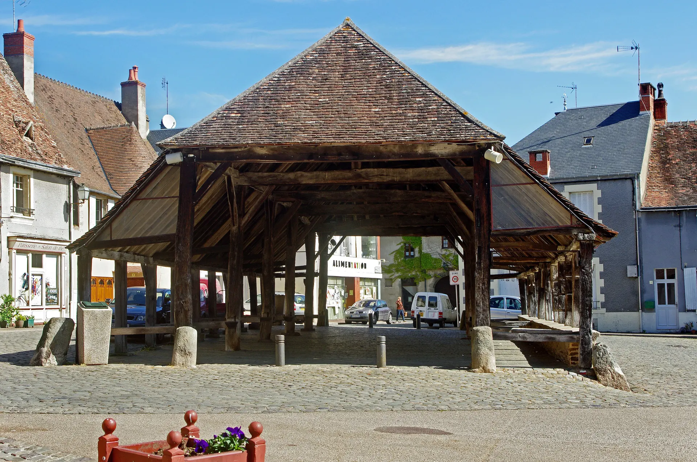

L’équité entre les communes
Le bourg-centre et le plus petit village ont chacun leur page, leurs entreprises, leur actualité. Personne n’est oublié, chaque maire y retrouve sa commune.
Présidente, président, vice-présidents au développement économique, maires : de la vallée au littoral, du bourg-centre au plus petit village, vous connaissez chaque commerce de vos communes, et vous savez ce qu’il en coûte de les garder vivants. terricom donne à votre engagement la vitrine qu’il mérite.
La boulangerie qui rouvre, le marché qui reprend, le jeune artisan qui s’installe : ce sont souvent les meilleures nouvelles d’un mandat. Elles méritent d’être connues de tous les habitants, pas seulement de ceux qui passent devant.
Avec terricom, votre communauté de communes offre à chaque entreprise une place dans la vitrine commune du territoire, et vous disposez d’un outil pour la faire vivre : campagnes de Noël, lettre aux habitants, circuits de découverte, offres d’emploi locales. Votre politique commerciale devient concrète, et visible de tous.
La page d’une commune, sur notre territoire de démonstration.
Le bourg-centre et le plus petit village ont chacun leur page, leurs entreprises, leur actualité. Personne n’est oublié, chaque maire y retrouve sa commune.
Une fiche offerte à chacune, sans démarche. Un geste simple, compris de tous, qui dit : « la collectivité est à vos côtés ».
Visites, recherches, appels, itinéraires, fiches complétées : un rapport prêt pour le conseil communautaire, en un clic.
Petites villes de demain, Action cœur de ville, manager de commerce : terricom donne au programme un outil quotidien, visible des habitants.
Visiteurs, nouveaux habitants, candidats à l’embauche : ils découvrent vos communes, vos savoir-faire et vos emplois, en français, en anglais et en allemand.
Une proposition claire, un outil hébergé en France et réversible. Rien à construire, rien à maintenir.
Le tableau de bord de la collectivité montre en un coup d’œil ce qui se passe sur le territoire : fiches consultées, entreprises actives, communes en progression, nouvelles entreprises à accueillir.
Visiteurs, recherches, fiches consultées, appels et itinéraires : chaque commune a ses chiffres, et le rapport se génère pour le bureau ou le conseil communautaire, prêt à être présenté.
Nous vous remettons une note de présentation prête à être jointe à l’ordre du jour. Voici l’essentiel.
Le portail, le back-office de la communauté et de chaque commune, les fiches de toutes les entreprises, l’hébergement, l’accompagnement : aucun module à ajouter, aucune commune laissée de côté.
Note de présentation, éléments de délibération, calendrier de lancement : nous préparons avec vos services tout ce dont le bureau et le conseil ont besoin.
Aucune entreprise n’a à payer pour exister. Celles qui veulent plus choisissent librement des options, sans engagement et sans commission sur leurs ventes.
Les fiches s’appuient sur le registre officiel des entreprises. La collectivité garde la main sur tout ce qui est publié, et peut exporter ses données à tout moment.
Les équipes élues ou réélues en 2026 construisent leur premier budget complet pour 2027. C’est le moment d’y inscrire une politique commerciale qui se verra dès le printemps.
La mise en service ne demande que quelques semaines : paramétrage, contrôle des entreprises, formation des agents et des mairies, courriers d’invitation. De quoi lancer le portail pour les beaux jours ou pour Noël.

BerryIls n’ont pas besoin de le faire pour être visibles : leur fiche existe dès l’ouverture, à partir du registre officiel. Ceux qui le souhaitent la complètent (photos, horaires, actualités) en quelques minutes, avec un assistant qui rédige pour eux. C’est toute la différence avec les places de marché, qui dépendaient de l’adhésion de chacun.
Chaque commune a sa page et, si elle le souhaite, son propre espace pour publier son actualité et ses opérations. Le plus petit village y figure au même titre que le bourg-centre. Les maires nous disent souvent que c’est ce qui les convainc.
Un agent du développement économique, le manager de commerce ou le chargé de communication y consacre quelques heures par mois. L’assistant prépare les campagnes et la lettre aux habitants à partir d’une simple phrase.
Oui. Aucune dépendance : vos données restent les vôtres, et vous les exportez à tout moment.
Nous préparons la démonstration sur vos communes et vos entreprises, avant même notre premier rendez-vous.